Goodbye Kansas
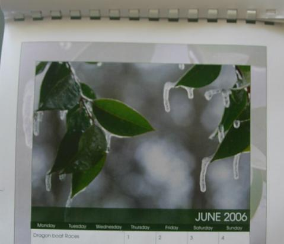 |
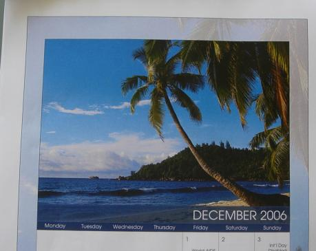 |
And they say Australia's not a backwards country.
It's the end of summer now. Days are much shorter; I've switched from singlets (tank tops) to t-shirts when I go out for dinner.
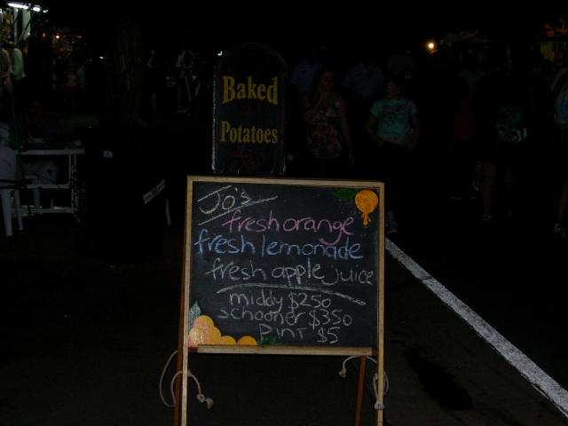
Oz units. Spotted at the Canberra equivalent of a state fair.
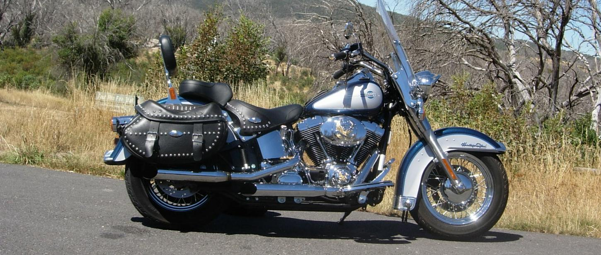
Got a bike, which I named "Big Blue"
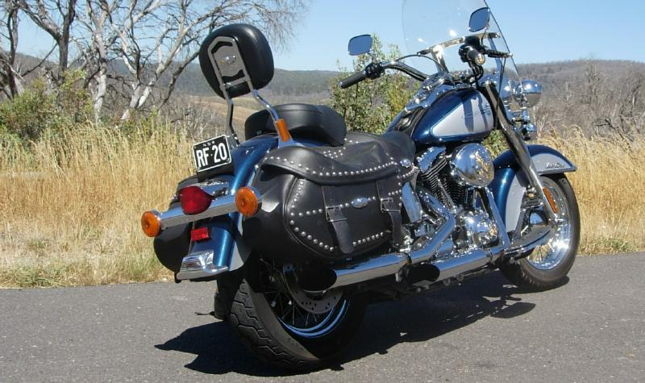
Put on 556 km touring the Snowy Mountains and other places southwest of Canberra.
Ten hours in the saddle, a record. It was a hot, hazy late-summer day.
The route was Canberra-Cooma-Mt. Selwyn-Tumbarumba-Tumut-Gundagai-Yass-Canberra
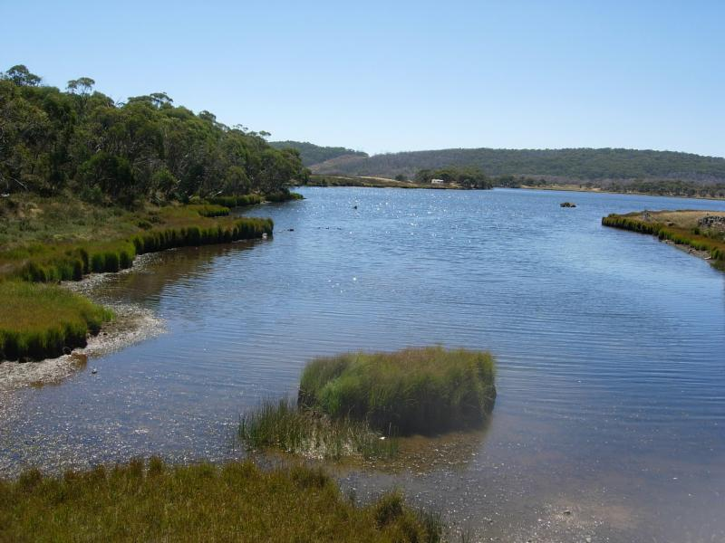
This lake atop the Snowies fronts onto a 3-mine dam which is the start of the Snowies hydroelectric system. After the dam, water is sent thru pressure tunnels carved in rock to turbines, then down to the next, until at bottom it's used for agriculture. Went to see on the the turbines. There was a sign "You're standing on it". It was over 300m underground. The whole system makes the most of very little water, and is largely invisible.
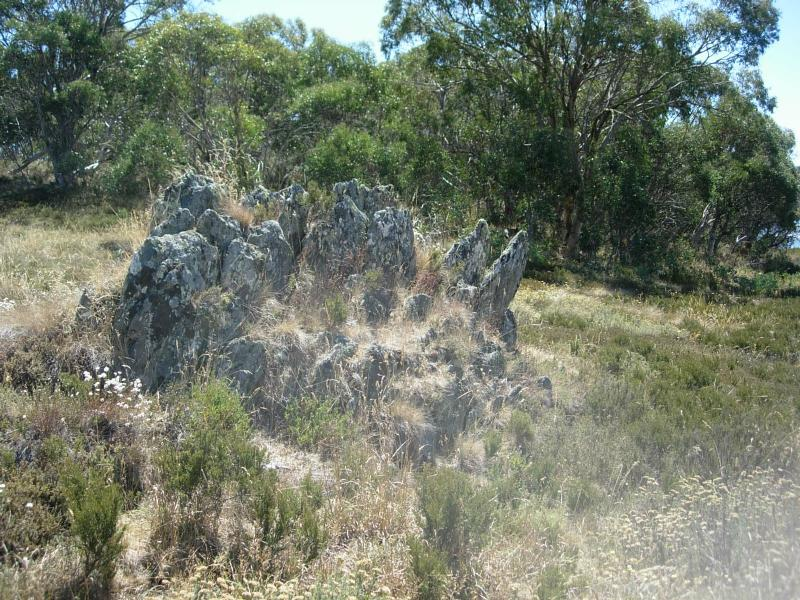
Rocks near the dam.
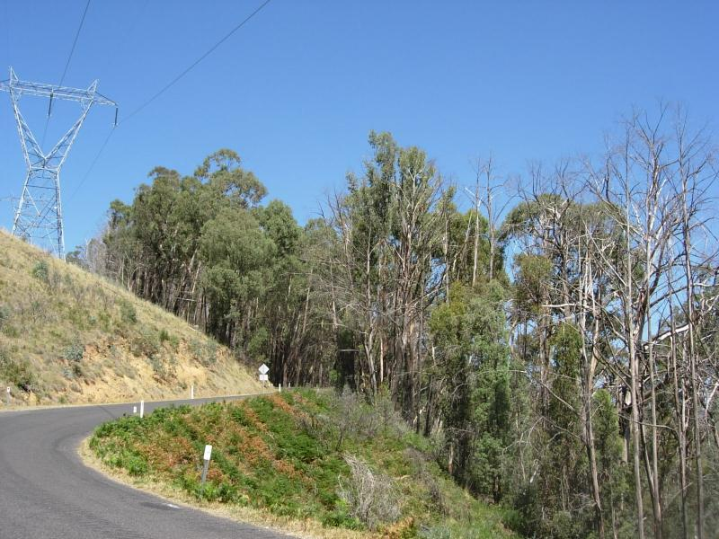
These trees were tall enough to survive the great fire of '03
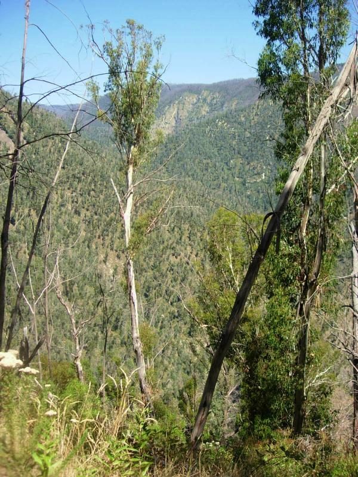
The northern part of the range is still recovering
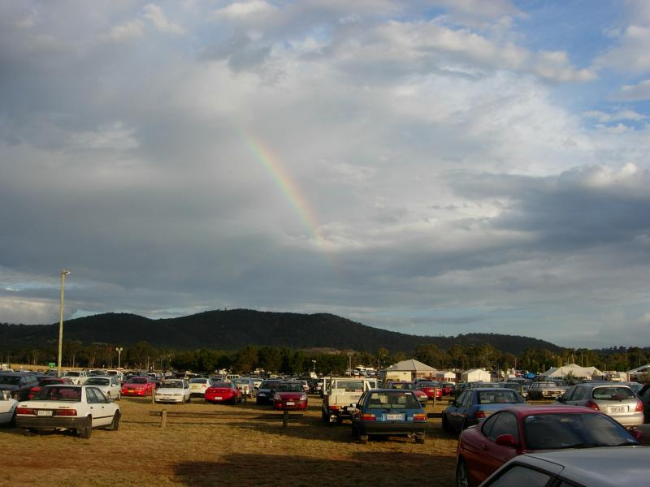
Rainbow over the state fair. Since the area around Canberra is sheep and cattle, I'm told the flies were formerly overwhelming (now they're merely incredible in Dec-Jan), until the importation of dung beetles, the only early eco-tampering I've heard of that had the desired effect and no side-effects.
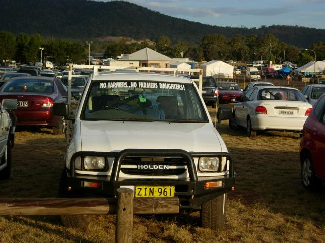
I went on a Friday night. Was going to come back Sat and take pics of the carnival and animals, but fell asleep instead. It's taken about 6 weeks to get over jet lag this time.
If CSC wins a large contract here, they're going to ask me to stay on 4 more years. I've written a large chunk of the RFP (it's legal here if I'm under nondisclosure). When everyone else is sweating trying to figure out what I meant, I'm going to New Zealand/South Island for 12 days in April.
Did my final orals for a second Tech Excellence award a couple of weeks ago. If I win, the company will pick up my travel expenses to the conference in Miami in June. I'll swing by DC on the way. United sent me an offer of free companion tickets; hope to bring a friend/colleage with me (Frank Habraken). Planning to visit LA and hopefully Hawaii in August.